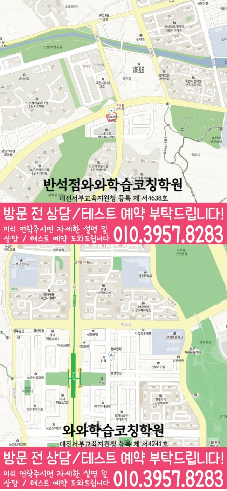

30초 핵심 안내
반석동 수학학원 선택 전 확인할 기준
반석동 수학학원은 반석동의 초·중·고 학생과 학부모가 학교 일정, 수학 상태, 개념 이해와 문제 적용의 연결을 확인하도록 돕는 정보입니다. 제공 센터 주소는 대전 유성구 지족로 282 코오롱타워2 303,304이고, 제공된 학교 참고 정보는 새미래초·반석초·새미래중·외삼중·하기중·반석고·노은고·지족고·유성고이며 실제 계획은 최근 교재와 오답 기록을 확인한 뒤 조정합니다.
Math Learning Guide
반석동 수학학원 선택 전 초·중·고 학생의 학교 진도, 수학 상태, 주간 수학 학습량과 점검 일정, 통학과 상담 기준을 확인하세요.
30초 핵심 안내
반석동 수학학원은 반석동의 초·중·고 학생과 학부모가 학교 일정, 수학 상태, 개념 이해와 문제 적용의 연결을 확인하도록 돕는 정보입니다. 제공 센터 주소는 대전 유성구 지족로 282 코오롱타워2 303,304이고, 제공된 학교 참고 정보는 새미래초·반석초·새미래중·외삼중·하기중·반석고·노은고·지족고·유성고이며 실제 계획은 최근 교재와 오답 기록을 확인한 뒤 조정합니다.
수업 안내 이미지

센터 위치 안내

대전 유성구 반석동에서 수학학원을 찾는다면 프로그램 명칭보다 학생이 현재 보이는 상태, 되짚기 절차, 피드백 확인 경로를 먼저 묻는 편이 실질적입니다. ‘시험집중관리’에 관해서는 성적을 약속하는 표현으로 보지 않고, 시작점과 확인 자료가 다음 복습으로 어떻게 이어지는지 물어봅니다. 반석동 안내 주소는 ‘대전 유성구 지족로 282 코오롱타워2 303,304’입니다. 특히, 반석동에서 방문을 준비할 때 주소만으로 이동 편의나 주변 조건을 판단하지 말고 실제 방문 전에 경로를 살펴보세요. 여기서, 반석동에서 영어·수학을 함께 비교하려면 두 과목의 개설 여부와 진단·과제 방식을 각각 확인할 필요가 있습니다. 설명을 위해 ‘오답을 다시 풀 때, 조건이 달라진 문제에도 이전 식을 그대로 적용하는 학생’이라는 가상 고민 유형을 정했습니다. 덧붙여, 본문에서는 문제의 조건을 읽고 표시하는 과정에서 보이는 행동을 기준으로 학습 방향과 선택 항목을 단계별로 정리합니다.
반석동 수학학원 상담은 학생의 현재 교재와 최근 오답을 확인한 뒤 현실적인 통원 일정까지 맞추는 과정입니다. 대전 유성구 반석동의 제공 센터 주소는 대전 유성구 지족로 282 코오롱타워2 303,304입니다. 수학 가능 학년은 초4·초5·초6·중1·중2·중3·고1·고2입니다.
반석동 학교 학습 연결을 확인할 때 참고할 제공 학교 목록은 새미래초·반석초·새미래중·외삼중·하기중·반석고·노은고·지족고·유성고입니다. 학교명은 수업 가능 여부를 단정하는 기준이 아니라 상담 전에 시험 범위와 사용 교재를 준비하기 위한 참고 정보로 활용합니다.
상담에서 확인할 센터는 와와학습코칭센터 반석점이며 제공 등록 정보는 대전서부교육지원청 등록 제 서4638호입니다. 반석동 상담에서는 등록 정보와 교습비 링크가 실제 수업 횟수·교재·보강 조건과 어떻게 연결되는지도 함께 확인합니다.
구체적으로, 정답 개수만으로는 문제의 조건을 끝까지 읽고 표시하는 데 겪는 어려움을 구체적으로 전달하기 어렵습니다. 학부모는 최근 문항에서 문제의 앞뒤 조건을 읽고 표시하는 장면을 하나 선택하고 처음 막힌 지점과 다시 시도한 행동을 함께 적을 수 있습니다. 또한, 반석동 상담에서는 수업 중 관찰 방법, 학생의 독립 풀이 기회, 재점검 자료를 차례로 묻습니다. 반석동에서 조건 읽기와 표시에 관한 상담 질문을 정리할 때, 세 질문에 대한 답이 서로 이어지는지가 선택의 첫 기준입니다.
아울러, 가상 유형에게 필요한 첫 목표 하나를 기준으로 상담 내용을 대조합니다. 반석동에서 조건 읽기와 표시를 살필 때, 설명 방식이 그 목표와 이어지는지, 혼자 풀 기회와 오답 확인이 있는지, 피드백을 누가 볼 수 있는지 각각 묻습니다. 반석동에서 조건 읽기와 표시에 관한 상담 질문을 정리할 때, 대상이나 조건이 빠진 답은 추가 질문으로 돌리고 추측해 채우지 않습니다. 반석동에서 받은 답은 같은 기준으로만 비교합니다.
반석동에서 조건 읽기와 표시를 살필 때, ‘피드백이 있다’는 표현만으로 내용과 전달 방식을 알 수는 없습니다. 덧붙여, 제공 여부부터 확인한 뒤 대상, 시점, 전달 방법, 자녀의 후속 행동을 차례로 질문합니다. 특히 문제의 앞뒤 조건을 읽고 표시하는 장면을 살핀 기록이 과제나 재학습에 쓰이는지 설명을 요청할 수 있습니다. 시험집중관리에 관한 확인과 학습 관리 답변은 서로 다른 항목으로 메모합니다.
또한, 반석동 상담에서 받은 내용을 정리할 때 학습 정보와 지역 정보를 분리합니다. 반석동에서 ‘시험집중관리’ 관련 사실과 확인 전 정보를 나눌 때, ‘대전 유성구 반석동’은 페이지의 지역 표기이며 주소는 방문 위치 대조용입니다. 그 과정에서, 반석동 페이지에 적힌 ‘새미래초’를 실제 재원 관계나 제휴의 근거로 해석하지 말고 학습 범위를 질문할 때만 사용합니다. 그 과정에서, 두 정보만 보고 이동 편의나 학교와의 관계를 판단하지 않도록 합니다.
조건 읽기와 표시를 점검할 때 첫 목표는 학생이 설명할 수 있는 행동 하나로 옮겨 적습니다. 복습 범위를 정할 때, 그 목표에 필요한 개념을 짧게 점검하고, 비슷한 문제와 조건이 달라진 문제를 차례로 풀어 봅니다. 마지막에는 그렇게 푼 이유와 틀린 원인을 말하게 한 뒤 조건의 위치나 수치가 달라져도 필요한 조건을 골라 새 식을 세우는지 확인합니다. 여기서, 진도량보다 첫 목표와 재점검 자료가 연결되는지 상담 메모에 기록해 둡니다.
‘시험집중관리’ 관련 설명은 시험 전 준비와 시험 후 오답 확인을 어떻게 나누는지 묻는 데서 시작합니다. 반석동 설명을 들을 때 시험 범위나 결과를 참고한다면 점수만 보는지, 틀린 유형과 풀이의 흐름까지 구분하는지 점검합니다. ‘오답을 다시 풀 때, 조건이 달라진 문제에도 이전 식을 그대로 적용하는 학생’ 고민에 관한 학습 질문과 구분해, 점검 기록이 다음 복습 범위와 학부모 안내에 어떻게 이어지는지도 질문할 수 있습니다. ‘시험집중관리’라는 표현을 검토할 때 구체적인 성적 변화는 가정하지 않고 확인한 절차만 선택 근거로 삼습니다.
문의 과정에서 들은 설명 가운데 적용 대상이나 시점이 빠진 답은 조건부로 따로 적습니다. 조건 읽기와 표시의 첫 목표와 다시 볼 자료가 연결되는지 먼저 검토하세요. 시험집중관리 관련 답변은 시작점과 점검 자료, 다음 복습의 연결을 다시 확인하고, 구체적인 성적이나 결과를 기대하는 근거로 사용하지 않습니다. 이때, 마지막으로 위치 정보는 주소 대조에만 쓰고 생활권이나 통학 편의를 덧붙이지 않습니다.
Information Basis
센터명·주소·등록번호·학교 참고 목록은 제공 자료 범위에서 확인했습니다. 실제 수업 가능 학년과 과목, 시간표는 상담 시점에 다시 확인해야 합니다.
FAQ
특히, 반석동 페이지에 안내된 주소를 먼저 대조한 뒤 실제 이동 경로, 소요 시간, 건물 출입 조건은 보호자가 직접 알아보세요. 위치 표기만으로 이동 편의와 주변 조건을 섣불리 평가하지 않는 편이 좋습니다.
답변을 같은 기준으로 비교하면, 모든 단원을 한 번에 바꾸기보다 최근 풀이에서 반복된 행동 한 가지와 완료 기준 하나를 고르세요. 그 목표에 필요한 범위와 후속 점검 시점을 어떤 근거로 정하는지 설명을 들을 때 문의 항목에 넣을 수 있습니다.
또한, 이 페이지에서 과제 유무와 방식을 확정할 수 없습니다. 과제가 있다면 완료 표시뿐 아니라 문제의 조건을 읽고 표시하는 과정에서 막힌 위치, 다시 풀 시점, 미완료 때의 확인 절차가 어떻게 되는지 질문해 보세요.
‘시험집중관리’는 성적이나 결과를 입증하는 자료가 아니므로 점검 과정에 관한 질문으로 바꾸어야 합니다. ‘시험집중관리’를 알아볼 때 시험 전 준비와 시험 후 확인을 나누어 묻고, 점수 외에 오류 유형과 풀이 과정을 어떻게 기록하며 다음 복습과 안내로 연결하는지 확인하세요.
Parent Perspective
※ 반석동 학부모가 상담에서 확인할 상황을 재구성한 예시이며, 실제 수강 후기나 특정 성적 결과가 아닙니다.
다음 내용은 학습 고민을 설명하기 위한 가상 예시입니다. 설명에 사용할 가상 고민은 ‘오답을 다시 풀 때, 조건이 달라진 문제에도 이전 식을 그대로 적용하는 학생’입니다. 반석동 문의 과정에서 이 가상 유형을 설명하기 위해 학부모는 학생이 표시한 조건, 놓친 조건, 처음 세운 식이 한눈에 보이는 문제 한 개를 준비합니다. 덧붙여, 반석동 상담용 메모에는 처음 풀이와 재풀이 사이에 바꾼 행동과 다시 본 날짜도 남깁니다. 오답을 다시 풀 때에 학생이 ‘조건이 달라진 문제에도 이전 식을 그대로 적용하는’ 모습을 보인다는 가정 아래, 상담에서는 조건을 끝까지 읽고 표시하는 순서, 조건이 달라졌을 때 식을 다시 세우는지 살필 방법을 물어봅니다. 아울러, 반석동 상담 자리에서는 추가로 오답 재풀이에서 처음과 달라진 행동과 완료 시점을 어떻게 살피는지도 살펴봅니다. ‘시험집중관리’에 관해서는 시험 전후에 어떤 기록을 확인하고 오류 유형을 복습과 학부모 안내로 어떻게 연결하는지도 함께 묻습니다. 시험집중관리는 성적 변화를 입증하는 정보가 아니므로 점검 자료와 복습 절차에 관한 답만 기록합니다. 이 조건 읽기와 표시 예시는 특정 학교 학생의 경험을 뜻하지 않으며 어떤 성과도 미리 가정하지 않습니다.